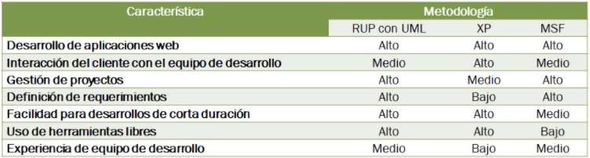

Metodologia Tradicional Microsoft Solutions Framework (MSF).
ANALISIS COMPARATIVOS.
Los puntos fuertes a considerar en el MSF son la gestión de proyectos, gestión de riesgos y la facilidad del desarrollo de aplicaciones web.
Para facilitar la elección de la metodología de desarrollo en el siguiente cuadro se puede ver un listado de características en donde se pude identificar la adecuación de las metodologías RUP con UML, XP, MSF.
